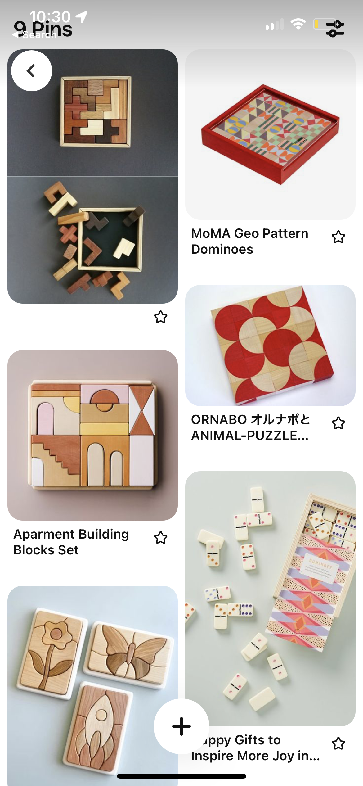
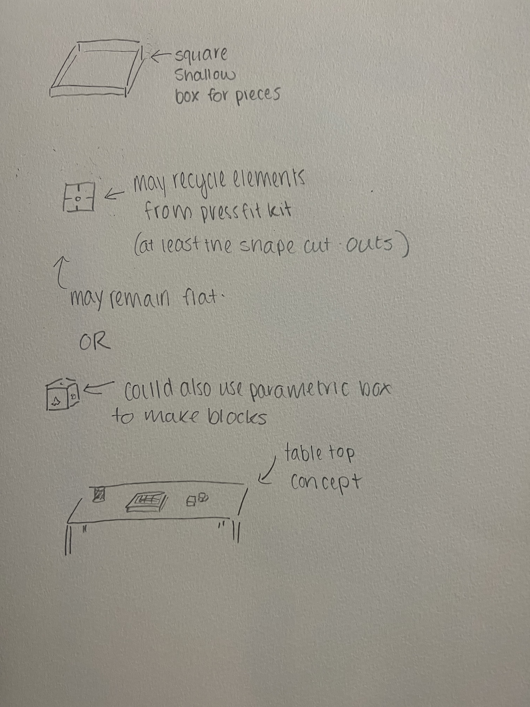
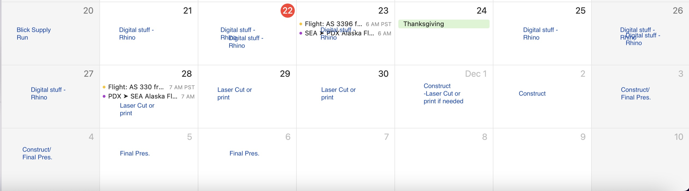

Bailey Dickey's Assignment 7!
Assignment 7: Final Project Proposal!

Concept: Table Top Puzzle Block Set
Intrigued by the potential to construct something both decorative and interactive, I found the perfect combination of these features in the world of tabletop puzzles. Combining the interlocking shapes found in jigsaw puzzles with the dimensionality and physicality of building blocks allows users to interact with the pieces in multiple ways, such as interlocking parts together or stacking them. Creating a decorative frame-like container for the pieces also allows for the puzzle to be displayed as a decorative tabletop artifact. See some inspiration photos and concept sketches below…
I am still undecided regarding the pattern that I will paint or etch into the surface of the blocks, but the red circular pattern in the inspiration photos about is one of the styles that I am considering. Basically, I am interested in some sort of geometric pattern. Alternatively, I may decide to recycle some of the geometric patterns that I used in my press-fit-kit project.

Intended Use Case: Decorative Entertainment
This tabletop puzzle will serve a dual purpose as both a decorative artifact and an interactive puzzle or block-building experience for people of any age. Users may choose to pour the pieces out of the frame and stand them upright to construct a 3d scene, stack them towards the sky, or fit them flat back into the frame.
Context: In-Home or On-the-go Use
Originally conceptualized as a product for in-home use, this puzzle block set was designed to sit and remain on top of a table or stand. This means that both the puzzle and the container must appear clean and visually appealing. However, as I conceptualized the frame housing for the pieces, I realized that by adding a clear lid to the set, it could easily become a portable puzzle block set as well. The puzzle is not meant to be particularly challenging to fit together, the joy in interacting with it should come from the visual appeal of the pieces and the ability to interact with them as mindlessly as one may choose.
Tasks
- Finalize box and puzzle block piece sketches
- Design parametric snap fit puzzle box using Grasshopper (already completed, see image bleow)
- Design lid in Rhino Design puzzle block pieces in Illustrator and Rhino, possibly incorporating parametric design in Grasshopper Laser cut, or Slice and 3-d print, puzzle box either using filament or particle board or other wood/wood-like material
- Use calipers and rulers to get fine tuned measurements of the constructed box to ensure lid and puzzle pieces are the correct dimensions
- Laser cut block pieces out of particle board or other wood/wood-like material
- Slice and 3-d print the lid using transparent filament

Timeline
Now- November 24th: Collect materials, construct items in Rhino and Grasshopper, laser cut and 3d printing terst prints for fit and to fine-tune settings. November 25 - December 4th: Final printing and assembly, paint puzzle pieces (depending on final design choice). December 5th- December 6th: Create github post for final presentation.
Contingency Plans
If the laser cutter is down I will need to switch to 3d printing everything - if this is the case I will likely need to scale the dimensions of my final product down in order to complete the project on time. In this case, I could try casting a piece or base for my box in order to add an additional class method to the project.Bill of Materials
- Wood, purchased from Blick, $22 (see image below)
- Filament - transparent (have at home)
- Paint? - Already have, unless I want specific acrylic paints (would buy at Blick, no more than $20)